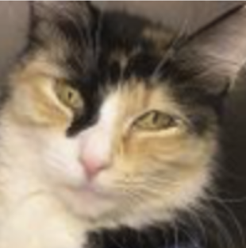
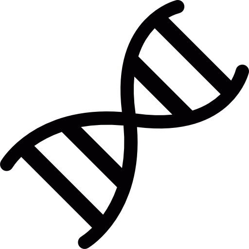

《 Projects
My explorations of new and exciting technologies
-
Crypto Trading Bot
A relatively simple high frequency trading bot build to handle the volatile nature of cryptocurrency. Built using an LSTM model in Keras. -
League of Legends Winner Predictions
Project aimed at ingesting and analyzing League of Legends match data to predict the winning team over the course of the game.
Build in Python using pandas and various supervised learning classification models, including ensemble classifiers. -
When Machines Dream of Cats
 An implementation of two GAN models to recreate photos of cats. It was a multistep process involving facial recognition, image processing, and setup and training of GAN models. Built in Keras.
You can check out the blog post here. -
Genetic Algorithms

My first (and rather elementary) foray into genetic algorithms.
Based on the priciples of survival of the fittest, mutations, and adaptation, these algorithms "evolve" to produce a version of themselves capable of solving the problem at hand.